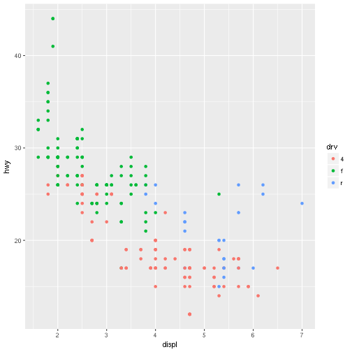

Presentations from Markdown (for R)
Write your slides in RMarkdown, a format that combines the core syntax of Markdown with embedded code chunks that are executed.
Turn your slides into a stunning HTML5 presentation using any of the more than ten slide generation frameworks supported.
Add slide classes and css to customize your presentation. Use layouts to achieve more complex designs.
Share your presentation on Github or Dropbox (or Rpubs) in minutes. Slidify has it all covered from creation to publication.
Useful to know as a preamble to shiny
install.packages('devtools')
install.packages_github('slidify','ramnathv')
install.packages('slidifyLibraries')
library('slidify')
author('firstdemo')
The former creates the directory /firstdemo (in your workspace) and switches to that directory opening a file named 'index.html' with a sample template to write over
An empty git repository is also initialized and opens a deck ('presentation')
The .Rmd file is the only one you need to work with and where you will actually modify the deck (your presentation).
---
title :
subtitle :
author :
job :
framework : io2012 # {io2012, html5slides, shower, dzslides, ...}
highlighter : highlight.js # {highlight.js, prettify, highlight}
hitheme : tomorrow #
widgets : [] # {mathjax, quiz, bootstrap}
mode : selfcontained # {standalone, draft}
knit : slidify::knit2slides
---
## Read-And-Delete
1. Edit YAML front matter
2. Write using R Markdown
3. Use an empty line followed by three dashes to separate slides!
---
## Slide 2
---
title: "Cool html5 presentations using slidify and ramnathv.js"
author: "Vannia Gonzalez"
github:
repo: toolstuts
user: vanniagm
hitheme: zenburn
job: Insight Fellows 2017
mode: selfcontained
revealjs:
theme: sky
transition: slide
subtitle: Insight useful tools
framework: revealjs
url:
lib: .
widgets: mathjax
---
slidify('index.Rmd')
# publish to github
# create an empty repo on github. replace USER and REPO with your repo details
publish(user = USER, repo = REPO)
#---
#1st slide
#---
#2nd slide
# --- .class #id
#---ds:soothe &vertical
#1st slide
#***
#2nd embedded vertical
# --- .class #id
#--- ds:alert
### This is an alert page
# --- .class #id
Slidify is designed to be MODULAR and provides a high degree of customization or you can access the defaults using slidifyDefaults(). It is possible to override options by passing it to slidify as a named list or as a 'yaml' file (the initial settings at the beginning of the deck) .
Widgets include useful tools to: - make quizzes - use math formulas and - utilize the bootstrap framework
library(ggplot2)
qplot(displ, hwy, data = mpg,col=drv)

HTML widgets are interactive graphics made for the web. These are the main libraries available:
If push(user,repo) does not work
>git init
>git remote addd origin <github-repo-url>
>git add .
>git commit -m 'description of changes'
>git push origin master